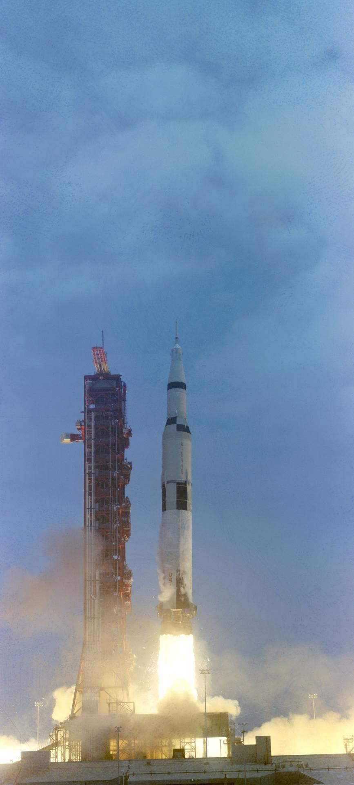
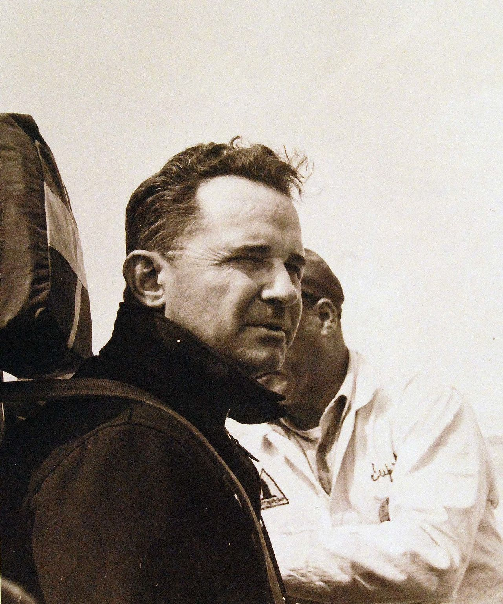
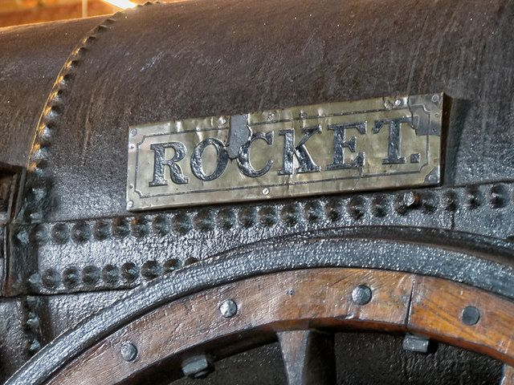

01人体—
步行
5km/h
一切速度的基准。本页所有「几倍」都从这里算起。
速度约 5 km/h
口径成人常速
横穿中国东西约 43 天不停
所有人 中
从奔跑、骑马、帆船到火车、汽车、飞机与火箭——纪录为什么一路飙升，而日常速度为什么在 1970 年代之后停了下来
人类乘坐过的最快速度，1969 年就到顶了；普通人日常能坐到的最快速度，1976 年到顶、2003 年退了回去。纪录一路往上，日常停在 1970 年代——除了一条还在往上走的线：高铁。这一周的三件事（Roadster 的演示、巴黎车展上两秒破百的展台、相隔五十年零一天的两个「音障日」）都站在这个分岔口上。
一条对数仪表、十九级阶梯：每往上一级，指针走过的距离相同，速度却快了几倍到十倍。往下滚，看每一级是谁、哪一年、用什么跑到的；卡片上的数字都标了口径。
5km/h
一切速度的基准。本页所有「几倍」都从这里算起。
所有人 中

44.7km/h
9.58 秒。人类自己能跑出的最高速度；比它快的，都得靠动物或机器。
Usain Bolt · 柏林 高

48km/h
第一次有机器跑得比驿站马车快一倍以上，而且不喘气。铁路公司从此按「跑得快而且不坏」采购。
斯蒂芬森父子 · 雨山 高
来源：Science Museum Group · Rocket locomotive；Wikipedia · Stephenson's Rocket
70.8km/h
前工业时代的速度上限。驿传、骑兵、邮车，全世界的「快」都由它定义了几千年。
Winning Brew · 宾州 中
来源：Pennsylvania Horse Racing Association：Fastest Speed for a Racehorse（引吉尼斯）

106km/h
第一辆破百的车是电动车。两台电机、一副鱼雷车身，比内燃机早了十年。
Camille Jenatzy · Achères 中
来源：Focus on Belgium · Camille Jenatzy；Wikipedia · La Jamais Contente

203km/h
第一辆跑过 200 km/h 的内燃机汽车，比当时任何飞机都快——电动列车在 1903 年已先到过这里。
Victor Hémery · 布鲁克兰兹 中
来源：Zwischengas（梅赛德斯-奔驰博物馆展品说明）· Blitzen Benz 1909；Wikipedia · Blitzen Benz

350km/h
普通人今天能买票坐到的陆上最快。纪录还在往上，日常停在这里快十年了。
京沪高铁 · 国铁集团 中

511km/h
水上速度纪录，四十八年无人能破。1930 年以来十三位挑战者七人身亡——这是一面真正的物理墙。
Ken Warby · Blowering Dam 高
来源：Guinness World Records · Water speed record (fastest boat)；Australian National Maritime Museum · Ken Warby；Speed Record Club · Water Speed Records

575km/h
轮子贴着钢轨能跑多快？574.8 km/h。接触网电压推到 31 kV、张力 40 kN，车轮加大到 1,092 mm。
SNCF / Alstom · 东线 中
来源：Wikipedia · Project V150；Futura-Sciences · Le TGV pulvérise son record 574,8 km/h
603km/h
不碰钢轨，就没有黏着极限。603 km/h，有人乘坐的地面交通纪录。
JR 东海 · 山梨试验线 高
来源：Guinness World Records · Fastest maglev train；Railway Gazette · Japanese maglev testing tops 600 km/h；China Daily · CR450 453 km/h（2025-10-21）；CRRC · CR450 Sets New Speed Records
900km/h
1958 年以来，普通人能坐到的最快速度就停在这里——中间只有协和的二十七年例外。
所有航空公司 中

1,127km/h
10 月 14 日，人类第一次飞过音速。火箭推力硬推过激波，可调安定面保住操纵。
Chuck Yeager · 穆罗克干湖 高
来源：NASA：Fiftieth Anniversary of X-1；NASA SP-4219 第 3 章 Breaking of the Sound Barrier；Wikipedia：List of flight airspeed records（含 FAI 条目）

1,228km/h
10 月 15 日，陆地上唯一的超音速纪录。两台喷气发动机，两程都突破音障，与 X-1 相隔五十年零一天。
Andy Green · 黑岩沙漠 高
来源：FIA · World Land Speed Records；Guinness World Records · Land speed (fastest car)；Wikipedia · ThrustSSC

2,180km/h
乘客能买票坐到的最快速度，二十七年。2003 年 10 月 24 日之后，日常速度退回了 Mach 0.85。
英航 / 法航 中

3,530km/h
吸气式飞机的绝对纪录，五十年未破。机身几乎全钛，巡航时蒙皮超过 300 °C。
美国空军 · Joersz / Morgan 高

7,274km/h
有翼载人飞行器的顶点。Inconel X 镍铬合金作热沉，机头驻点 1,900 °F。
Pete Knight · NASA / USAF 高

39,897km/h
人类乘坐过的最快速度。1969 年 5 月 26 日从月球返回，此后五十七年无人更快——今年的 Artemis II 也没有。
Stafford / Young / Cernan 高
来源：NASA History：50 Years Ago, Apollo 10 Clears the Way；吉尼斯：Fastest speed achieved by humans

692,000km/h
最快的人造物，无人。掠过近日点时相对太阳 692,000 km/h，是 Apollo 10 的十七倍。
NASA · 无人 高
来源：NASA：Parker Solar Probe Makes History With Closest Pass to Sun
10.79 亿km/h
终点。再往上没有了——帕克探测器只走到这把尺子的 0.064%。
宇宙 高
剪影全部程序绘制，只画体量与轮廓，不画商标、不复刻外观细节；比例经夸张处理。数字与口径同第二章矩阵与卷首速度尺，出处见各级卡片与卷末。
入口只占这一章。Roadster 的每个数字都是「演示」或「宣称」，没有第三方实测；巴黎车展上两秒破百摆在普通展台，隔壁展台卖的是「慢」；10/14 与 10/15 是空中和陆上两次突破音障的纪念日。正文其余部分不依赖这场发布会。
特斯拉在得州韦科的 SpaceX 试验场演示新一代 Roadster（原定 10 月 1 日，因恶劣天气推迟）：倒置吸附、冷气推进器飞离坡道、翻转、跃过 Cybercab、Cybertruck、Semi、Model Y、Model 3。三款：Performance（公路版，两座，主动空气动力与「多模式吸附系统」）、Thrust（赛道版，两座，后置冷气推进器）、Rocket（「可飞」版，单座，车身周围 10 个冷气推进器，600 升压缩空气储于碳纤维缠绕压力容器，邀请制，不准上公路）。预订：CBS 10/15 称非飞行版在线定金 5,000 美元；发布会前 CBT News（9/21）的细则是 5 万美元（先刷卡 5,000、10 天内电汇 45,000）、Founders 系列 25 万美元；发布会后 TechCrunch 写 Performance 预订 5 万、Thrust 预订 25 万美元。售价未公布。马斯克称 2028 年投产。
质疑 / 分歧Electrek（Jameson Dow）：4,700 kg 下压力对一辆不到 2 吨的车高得不合常理；向上推力会减少轮胎载荷、降低抓地；0–60 未说明是否用一英尺滚动起步，逐帧看推进器在车动之前就已启动；演示车可能没装电池。FAA 向 CBS 表示该车不符合「航空器」定义，由谁监管不明；美国运输部一名官员对它能否真的起飞表示怀疑。马斯克本人的原话是「如果安全是你的第一目标，别买 Roadster」（TechCrunch）和「成功没有保证」（CBS）。
来源：TechCrunch；Electrek；CBS News；CBT News：预订金细则（2026-09-21）；Tesla 官网
腾势 Z 在 2026 年巴黎车展（10 月 12–18 日，凡尔赛门 5.3 馆）是腾势首次参加巴黎车展，Coupe、Spider、Racing 三个版本同台。
质疑 / 分歧售价与上市时间未公布。
耶格尔驾 Bell X-1 首次载人超音速，Mach 1.06。美国空军 1948 年 6 月才正式确认。
Andy Green 驾 Thrust SSC 在黑岩沙漠跑出 1,227.985 km/h（Mach 1.016，吉尼斯作 1.020），至今唯一的超音速陆地纪录——与 X-1 相隔五十年零一天。
鲍姆加特纳从 39 km 高空跳下，自由落体 1,357.6 km/h（FAI），第一个不靠载具超音速的人。
市场监管总局（国家标准委）2026 年 8 月批准发布强制性国家标准（央视 8 月 31 日报道；标准检索页列发布日期 8 月 27 日） GB 7258—2026《机动车运行安全技术条件》，2027 年 7 月 1 日实施。官方通报把「新能源汽车起步加速性能」与「单踏板」制动、虚拟操纵件等一起列入规范范围，未给出数字。2025 年 11 月公安部征求意见稿在「超速报警和限速功能」一节写明：「乘用车每次上电/点火后（发动机自动启停除外），应处于百公里加速时间不小于 5 s 的默认工作状态」。
质疑 / 分歧正式稿全文截至 10 月 17 日尚未在国家标准全文公开系统上线，5 秒条款是否原样保留、条文编号要等正式稿公开。
来源：央视新闻（2026-08-31）；中国金融信息网转发官方通报（2026-08-31）；国家标准全文公开系统检索页；新华网：征求意见稿报道（2025-11-18）；界面新闻：征求意见稿报道（2025-11-13）
每格一个代表物：速度、年份、谁、口径、置信度和一句「为什么是它」。点任何一格看全部字段与照片；「人体与动物」一行作参照——猎豹的 98 km/h 到 1899 年才被汽车超过（电动的 La Jamais Contente）。
红线是「人类乘坐过的最快速度」，1969 年 Apollo 10 返回时到顶，今年的 Artemis II 没有改写它；黑线是「普通人日常能坐到的最快速度」，1976 年协和到顶、2003 年退回 Mach 0.85，陆上只剩高铁一条线还在往上。反例并列在后面。
短程冲刺估计值，远程驿传平均远低于此；现代赛马极速 70.76 km/h。
约 30 mph（48 km/h），1830 年利物浦—曼彻斯特铁路通车。
1903-10-28 Marienfelde—Zossen 普鲁士军用铁路；同年 10 月 6 日西门子车 206 km/h。人类乘坐首次超过 200 km/h。
FAI 1913 年 6 月的纪录是 179.82 km/h；9 月 29 日兰斯 Gordon Bennett 杯最高 203.85 km/h（Monash 航空史）。没有超过 1903 年的电动列车，不画进纪录线
FAI 绝对纪录；活塞时代顶点。
NASA 约 700 mph / Mach 1.06 / 43,000 ft；另有 670 mph（1,078 km/h）换算。
USAF 2,094 mph，Mach 3.196。
近地轨道速度推算值。
NASA 4,520 mph；低于轨道速度，列出以示有翼飞行器上限。
口径并列：NASA 24,791 mph（39,897 km/h）；吉尼斯 39,937.7 km/h（24,816.1 mph）；任务报告再入界面 36,314 ft/s。
发射前 NASA 飞行主任预告约 25,000 mph；再入前一日（4/9）NASA 博客 23,864 mph；事后乘组 / 媒体 24,664 mph（BBC，39,693 km/h）、IFLScience 24,527 mph。NASA 事后评估只说实测与预测相差不到 1 mph，未公布数字。无论取哪个都低于 Apollo 10
来源：Pennsylvania Horse Racing Association：Fastest Speed for a Racehorse（引吉尼斯）；Wikipedia：Experimental three-phase railcar（1903 Zossen）；Monash Hargrave 航空史：Maurice Prévost；Wikipedia：List of flight airspeed records（含 FAI 条目）；波兰航空博物馆：Messerschmitt Me 209 V1
英国邮车 1830 年前后干线平均约 8–10 mph（13–16 km/h），含换马，取 14
通车时客车平均约 17 mph（通行说法，未单独核）；火箭号在雨山平均 12 mph、单机冲刺 30 mph
少数特快的巡航速度约 60 mph；平均含停站更低。1904 年「特鲁罗城」102.3 mph 是单人秒表、无乘客的邮件车，不算日常
德国「飞翔的汉堡人」1933 年起运营最高 160 km/h；英国 Mallard 1938 年 202.8 km/h 是试验，不是日常
波音 707 巡航约 Mach 0.85，约 900 km/h。喷气客机商业运营始于 1952 年 BOAC 彗星 1 型（约 740 km/h）；1958-10-04 BOAC 彗星 4 型跨大西洋开航，泛美 707 在 10-26
巡航 Mach 2.04 约 2,180 km/h；BA 自己的口径是 1,350 mph（BA 换算作 2,160 km/h，按 1.609 实为 2,172）；英航 27 年载客逾 250 万人次，能坐到的人极少
2003-10-24 协和最后商业飞行后，民航巡航回到 Mach 0.78–0.85，约 850–900 km/h
2008-08-01 中国首条 350 km/h 运营线路；2011 年降速到 300，2017-09-21 复兴号在京沪高铁恢复 350
2017-09-21 京沪高铁恢复 350 km/h 运营，至今是轮轨铁路最高商业运营速度（上海磁浮 2004–2021 年曾以 431 km/h 运营，2021 年起降为 300）
轮轨高铁最高商业运营 350 km/h，客机巡航约 900 km/h，快十年没变。变的是网络：截至 2025 年底中国高铁约 5.04 万公里；CR450 试验 453 km/h、目标运营 400 km/h，国铁集团定 2026 年完成运用考核和设计定型，尚未商业运营
来源：英国国家铁路博物馆；英国航空：Celebrating Concorde；新华网（2026-01-04）；科技日报（2026-01-04）
为什么 0–100 km/h 卡在两秒上下、轮轨为什么停在 574.8、水上为什么 1978 年后无人再破、音障与热障怎么过、人体受得了多少 g、以及光速这个终点。每面墙后面写的是突破手段和今天的例子。
轮驱车起步时，加速度最多等于轮胎摩擦系数乘以重力加速度：量产胎在干沥青上 μ 约 1.0–1.2，于是 0–100 km/h 理论上卡在 2.4–2.8 秒附近。四驱把全部重量都用来抓地、起步控制把滑移率锁在峰值，才把实测压到 2 秒上下；再往下只能靠胶水般的赛道处理和 1 英尺 rollout 的口径，因为下压力在起步时几乎为零，要到高速才有。
今天的例子Rimac 的 1.74 s 换算约 1.6 g——已经超过普通轮胎的 μ，靠的是 rollout 口径、接触面热胶与起步瞬间的重量转移，物理墙并没有被推倒，只是被量到了极限。
来源：Autoweek（Yahoo Autos 转载）· Rimac obliterates 0–60 mph mark, 2023-05-17；Bugatti Newsroom · 300 mph 单向口径说明
置信度 中
钢轮对钢轨的黏着系数只有 0.1–0.3，而且随速度和雨水迅速下降，所以高速列车要把全部动力分散到很多轴上，否则一踩就打滑。更硬的墙在车顶：受电弓在接触线上激起的波以 √(张力/线密度) 的速度传播，列车一旦接近这个波速，接触线就会抬起、离线、拉弧。2007 年 TGV 跑 574.8 km/h 时，SNCF 把接触网张力从 25 kN 提到 40 kN、电压从 25 kV 提到 31 kV、车轮直径加大到 1,092 mm，才让这一次试验成立——这也是为什么轮轨商业运营停在 350 km/h，再快就交给磁浮。
今天的例子TGV V150 的 574.8 km/h 是改装试验，而 2017 年起复兴号的 350 km/h 是全球最高商业运营速度——两者之间差的不是动力，是接触网与轮轨的疲劳寿命。
来源：Wikipedia · Project V150（接触网 31 kV / 40 kN、车轮 1,092 mm）；Guinness World Records · Fastest maglev train
置信度 中
水比空气重 800 倍，所以速度一上去，艇体任何浸水部分的低压侧都会把水『煮沸』成气泡——这就是空化，升力随之塌陷又突然恢复。动力艇的解法是让船尽量离开水面，只靠三点（两个浮筒和艇尾）触水，但这样一来船就成了一架贴水飞行的飞机，俯仰角差一度就会抬头翻过去：Segrave、Donald Campbell 和两位 1980 年代的挑战者都这样丧生，1930 年以来 13 位挑战者 7 人身亡，Spirit of Australia 的 511 km/h 从 1978 年保持到今天。风帆走的是另一条路：船速在 50 节左右撞上空化墙，Sailrocket 2 的 65.45 节与 SP80 的 80 节目标都靠主动通气的楔形翼，把气泡变成一个稳定的空腔。
今天的例子Ken Warby 纪录跑中瞬时约 555 km/h（吉尼斯记在 1977 年名下，海事博物馆记 1977 年认证纪录为 464.44），认证纪录只有 511.11 km/h——再往上，船就不再是船。
来源：Australian National Maritime Museum · Ken Warby（13 人 7 死）；METSTRADE · Record hunters overcome hydrofoil cavitation（50 节墙、SP80 通气翼）；Guinness World Records · Water speed record (fastest boat)
置信度 中
音障不是一堵墙，是激波：接近 Mach 1 时阻力骤增、操纵面失效，1940 年代多架俯冲的螺旋桨飞机因此解体。X-1 用火箭推力硬推过去，并靠可调安装角的水平安定面保住了操纵；NASA 史料写这次飞行「平稳，没有剧烈抖振，没有失控」。穿过音障后真正的墙是热：空气在机头驻点被压缩加热，温度随马赫数平方增长。SR-71 以 Mach 3.2 巡航时表面温度约 800 °F（约 430 °C），热浸温度超过 600 °F，机体几乎全部用钛合金；X-15 外皮用 Inconel X 镍铬合金作热沉，Mach 6.7 时机头驻点气温达 1,900 °F（约 1,040 °C），X-15A-2 为此加了烧蚀涂层，仍在 1967 年纪录飞行中烧坏了挂架。吸气式发动机在 Mach 10 附近也到头：X-43A 的超燃冲压只工作了约 10 秒。
今天的例子SR-71 以 Mach 3 持续飞行时表面约 800 °F；这正是它必须用钛而不是铝的原因——铝合金在 300 °F 以上就迅速失去强度。
来源：NASA SP-4219 第 3 章 Breaking of the Sound Barrier；NASA Dryden SR-71 Fact Sheet（FS-030）；NASA Aeronautics：X-15；NASA：Guinness Recognizes NASA's X-43A Scramjet Speed Record
置信度 高
速度本身不伤人，加速度才伤人。1954-12-10 John Stapp 在霍洛曼空军基地乘「Sonic Wind 1 号」火箭滑车加速到 632 mph（约 1,017 km/h），再在 1.4 秒内刹停，承受 46.2 g——美国空军形容「相当于以 50 mph 撞墙」。他暂时失明、浑身淤血，但没有永久伤害；这组数据直接为弹射座椅与汽车安全带定了标准。日常参照：战斗机飞行员持续 9 g 需要抗荷服与抗荷动作；弹射座椅瞬间约 12–20 g；F1 车手刹车与过弯约 5–6 g；Apollo 10 再入峰值 6.78 g（任务报告）。
今天的例子Apollo 10 以 39,897 km/h 再入，航天员承受的峰值只有 6.78 g，远低于速度只有它 1/40 的火箭滑车——因为减速用了几分钟而不是 1.4 秒。
来源：赖特-帕特森空军基地：'Fastest Man on Earth' started out as aeromedical researcher；史密森尼航空航天博物馆：The Man Behind High-Speed Safety Standards；NASA Apollo 10 Mission Report（MSC-00126）
置信度 高

狭义相对论下有质量的物体永远到不了光速：接近 c 时推进同样的 Δv 需要的能量趋于无穷。帕克太阳探测器 2024-12-24 近日点的 430,000 mph ≈ 692,000 km/h ≈ 192 km/s，是人造物的顶点，但只是光速的 0.064%；在这个速度下 γ − 1 ≈ 2×10⁻⁷，即若全年保持这个速度，探测器上的钟每年比地球慢约 6 秒。人类乘坐过的 Apollo 10 只有光速的 0.0037%。
今天的例子算法：v/c = 192 km/s ÷ 299,792 km/s ≈ 0.00064 = 0.064%；Apollo 10：11.08 km/s ÷ 299,792 ≈ 0.000037 = 0.0037%。
来源：NASA：Parker Solar Probe Makes History With Closest Pass to Sun；吉尼斯：Fastest speed achieved by humans
置信度 高
每一次纪录背后都有一个买单的人——铁路公司、报纸、国旗、赞助商、奥运会、冷战预算、监管机构。按动机筛：商业、政治、技术、规则、文化。
利物浦—曼彻斯特铁路公司已决定用机车而不是固定蒸汽机拖缆，但不知道该买谁的，于是悬赏 500 英镑，1829 年 10 月在雨山公开比试九天。报名约十台，到场五台，真正较量的是「新奇号」「无双号」和斯蒂芬森父子的「火箭号」。火箭号是唯一可靠跑完规定里程的参赛者，平均 12 mph，单机冲刺到 30 mph。从此「跑得快而且不坏」成了铁路公司的采购依据。
来源：英国国家铁路博物馆：Stephenson's Rocket, Rainhill and the rise of the locomotive；Science Museum Group 藏品：Rocket locomotive

火车比太阳时的误差跑得快。1841 年大西部铁路时刻表注明「伦敦时间比巴斯、布里斯托时间早 11 分钟」，一张表上两套钟。1840 年 11 月大西部铁路率先全线采用伦敦时间，1847 年 12 月英国铁路清算所建议统一用格林尼治时间，到 1855 年几乎所有教堂与市政厅都按「铁路时间」拨钟。1883 年 11 月 18 日美国铁路自行划定时区，1884 年 10 月华盛顿国际子午线会议定下 24 个时区。速度逼着时间成了公共基础设施。
新茶先到伦敦就能卖高价，提单上写明给头一艘靠泊的船每吨 10 先令溢价。1866 年 5 月 30 日 Ariel、Taeping、Serica 几分钟之内先后驶出福州港，绕好望角 99 天，9 月 6 日同一个潮水进泰晤士河：Taeping 晚上 9 点 47 分进港，Ariel 10 点 15 分，只差 28 分钟。两船船东事先约好平分溢价，两位船长也平分了 100 英镑奖金。速度第一次被明码标价，也因为差距太小而第一次被分享；这之后溢价制度就取消了。
1893 年 5 月 10 日纽约中央铁路 999 号机车据称跑出 112.5 mph；1904 年 5 月 9 日，记者 Rous-Marten 在大西部铁路「特鲁罗城」牵引的邮件列车上，用秒表对着里程碑掐出 102.3 mph。秒表只准到五分之一秒，加上人的反应，误差超过 2 mph。大西部铁路没有批准他发表，1922 年才承认那是自家的车。科学博物馆至今把它列为「有争议」。速度纪录的价值从此取决于谁在计时、怎么计。
1899 年春，比利时车手 Camille Jenatzy 与法国 Jeantaud 电动车在巴黎近郊 Achères 连番对决，四个多月里把汽车速度纪录从 63 km/h 轮番推高。4 月 29 日（一说 5 月 1 日），Jenatzy 驾驶鱼雷形电动车「永不满足」跑出 105.882 km/h，成为第一辆超过 100 km/h 的汽车。内燃机汽车要到 1902 年才追上这个数。电动车先到了一百，然后在接下来一百年里退出速度竞赛。
通行说法，未找到可引的一手来源。
奔驰为了宣传造了一台 21.5 升、200 马力的纪录车。1909 年 11 月 8 日 Victor Hémery 在英国布鲁克兰兹跑出 202.7 km/h，是第一辆超过 200 km/h 的内燃机汽车，比当时任何飞机和运营中的火车都快（1903 年 Zossen 的电动试验车已跑过 210）。1911 年 Bob Burman 在代托纳沙滩跑到约 228 km/h，但因单向计时未获欧洲机构承认。「地球上最快的人」从此是一个厂商可以买下、报纸可以叫卖的头衔。
通行说法，未找到可引的一手来源。
两战之间，英国车手把陆地速度纪录当成国家事业。1927 年 Henry Segrave 在代托纳沙滩以 203.79 mph 首次突破 200 mph，1929 年受封爵士；Malcolm Campbell 1931 年破纪录后同年封爵，1935 年 9 月 3 日在博纳维尔盐滩以 301.129 mph 首破 300 mph。报纸、汽油与轮胎公司和政府三方供养着这些「蓝鸟」，纪录成了帝国自信的指标。
通行说法，未找到可引的一手来源。
水上速度纪录是死亡率最高的纪录。1930 年 6 月 13 日 Henry Segrave 在温德米尔湖创下 98.76 mph 纪录后当天撞上浮木身亡；1967 年 1 月 4 日 Donald Campbell 在康尼斯顿湖以超过 300 mph 翻船。1978 年 10 月 8 日澳大利亚人 Ken Warby 驾驶自己车库里造的「澳大利亚精神号」在布洛沃林水库创下 511 km/h 的 UIM 纪录，此后四十八年无人打破，多位挑战者丧生。
1938 年 1 月 28 日清晨，Rudolf Caracciola 驾驶奔驰 W125 纪录车在法兰克福—达姆施塔特高速公路上双向平均跑出 432.7 km/h（飞行一公里），回程峰值 437 km/h。同一上午，Auto Union 的 Bernd Rosemeyer 试图反超时被侧风掀翻身亡。两家车厂都由国家支持，轮番争夺的是「德国工业能跑多快」的证明。这个在公路上创下的纪录保持了近八十年，2017 年 11 月才被 Koenigsegg 在封闭的内华达公路上以约 447 km/h 超过。
1947 年 10 月 14 日上午 10 点 26 分，Bell X-1 从 B-29 弹舱脱落，Chuck Yeager 在加州穆罗克干湖上空约 43,000 英尺达到 Mach 1.06，约 700 mph。刚独立不到一个月的美国空军把这件事列为机密，连高度和速度都不公开，直到 1948 年 6 月才正式对外确认。纪录在诞生后八个月里不存在于公众视野：冷战开端，速度首先是军事资产，其次才是荣誉。
1957 年 10 月 4 日苏联发射斯普特尼克一号，人造物第一次达到约 29,000 km/h（约 8 km/s）的轨道速度；1961 年 4 月 12 日加加林乘东方一号绕地球一圈，108 分钟，轨道速度约 27,400 km/h。速度在这里不是比赛指标而是能力证明：能把人送上轨道，就能把弹头送到任何地方。美国一个多月后，1961 年 5 月 25 日，肯尼迪提出十年内登月。
通行说法，未找到可引的一手来源。
东海道新干线 1964 年 10 月 1 日通车，东京—新大阪最高 210 km/h，是世界第一条高速铁路；九天后，10 月 10 日东京奥运会开幕。工程用了世界银行贷款，日本政府把它当作战后复兴的展品。为了赶奥运，通车第一年先以 4 小时运行，路基稳定后 1965 年才提到 3 小时 10 分。今天同一段线路最高 285 km/h，最快 2 小时 21 分。
图-144 于 1968 年 12 月 31 日首飞，比协和早两个月；协和 1969 年 3 月 2 日在图卢兹首飞。商业运营则反过来：协和 1976 年 1 月 21 日英法同日开航，伦敦—巴林与巴黎—里约，今年正好五十年；图-144 1977 年 11 月 1 日才载客飞莫斯科—阿拉木图，1978 年 6 月 1 日宣布停飞，共 55 班、3,284 名乘客。协和 2003 年 10 月 24 日完成最后一班商业飞行。两国都把超音速客机当国家名片，也都没靠它赚到钱。
1973 年美国联邦航空局禁止民用飞机在陆地上空超音速飞行（14 CFR 91.817），协和因此只能在海上跑 Mach 2，美国自己的超音速客机也随之夭折。2025 年 6 月 6 日第 14304 号行政令要求 FAA 在 180 天内废止这条禁令，改为以噪声为准的认证标准；同年 10 月，NASA 的 X-59 低音爆验证机在加州帕姆代尔首飞，目的就是证明音爆可以小到允许陆上飞行。五十二年后，规则比飞机先动。
1973 年 10 月阿拉伯石油禁运后，美国国会通过《紧急公路节能法》，尼克松 1974 年 1 月 2 日签署：任何州限速高于 55 mph，联邦就不批准它的公路项目。尼克松估算每天能省近 20 万桶油。限速原本是应急节能措施，却存续了二十一年，直到 1995 年 11 月 28 日《国家公路系统指定法》才废止。那是汽车史上少数几次「慢下来」被写进联邦法律。
1997 年 10 月 15 日，英国空军飞行员 Andy Green 驾驶 Thrust SSC 在内华达黑岩沙漠以 1,227.985 km/h（763.035 mph）成为第一辆超音速汽车，距离 Yeager 飞机破音障正好五十年零一天。吉尼斯记作 Mach 1.020，项目方与 FIA 常用 Mach 1.016，差别来自当天气温换算。那之后二十九年再无人破纪录；接班的 Bloodhound 2019 年跑到 1,010 km/h 后因资金不足停摆。
2007 年 4 月 3 日 13 点 13 分，RFF、阿尔斯通与法国国铁的 V150 试验列车在东欧高速线跑出 574.8 km/h，刷新 1990 年 TGV 大西洋线 515.3 km/h 的轮轨纪录。列车由两节 TGV POS 动力车、三节双层车厢加两组 AGV 动力转向架拼成，总功率 19.6 MW，只为这一天。随后的高铁订单竞争里，法国人可以说自己握有轮轨最高速。
2008 年 8 月 1 日京津城际开通，中国第一条 350 km/h 的高铁，赶在北京奥运开幕前一周。到 2025 年底，全国铁路营业里程约 16.5 万公里，其中高铁约 5.04 万公里，「十四五」五年高铁从 3.79 万公里增加到 5.04 万公里。速度在这里从单点纪录变成网络尺度：不是一列车多快，而是多少城市能在一小时内互达。
2013 年 8 月 12 日，马斯克发布 Hyperloop Alpha 白皮书，宣称低压管道里的舱体可以跑 760 mph（约 1,220 km/h）。2014 年成立的 Hyperloop One 融资超过 4.5 亿美元，2020 年唯一一次载人试验只跑到 107 mph（约 172 km/h）。2023 年 12 月 21 日彭博报道公司将于 12 月 31 日关闭并出售内华达试验线。这是速度叙事最典型的一次「先融资再验证」。
2015 年 4 月 21 日，JR 东海 L0 系磁浮列车在山梨试验线跑出 603 km/h，载人铁路速度纪录。它为中央新干线而生，东京品川—名古屋原定 2027 年开业，因静冈段水资源争议与工程难度，JR 东海 2024 年起已把目标改为 2034 年或更晚。纪录十一年没有变，线路却还在挖。
曾经只有超级跑车才有的 0–100 km/h 四秒内加速，现在是三十万元级电动车参数表的常客。小米 SU7 Max 2024 年 3 月 28 日上市，官方宣称 0–100 km/h 2.78 秒、最高 265 km/h，售价 29.99 万元，页面没有注明测试条件。电机扭矩即时输出，加速几乎不要钱，车企的营销重点随之从「多快」转向「多稳」，国家标准也开始反过来给加速上锁。
2026 年 10 月 15 日，特斯拉在得州韦科的 SpaceX 试验场演示新 Roadster：冷气推进器让车倒置吸附、飞离坡道、翻转，跃过一排自家车辆。0–60 mph 录像里是 1.0 秒，现场宣称 0.81 秒，推文说顶配 0.59 秒以内。预订金 5 万美元，量产定在 2028 年。马斯克自己说不确定它能在营收上带来多大变化。当加速已经没有对手，速度只能变成表演。
GB 7258—2026《机动车运行安全技术条件》2026 年 8 月发布（央视 8 月 31 日报道），2027 年 7 月 1 日实施，官方通报把「新能源汽车起步加速性能」列入规范范围。2025 年 11 月公安部征求意见稿的原文是：「乘用车每次上电/点火后（发动机自动启停除外），应处于百公里加速时间不小于 5 s 的默认工作状态」，车辆仍可有运动模式，只是启动时默认温和。这是第一次由国家标准而不是限速牌来管「车能多快地快起来」。
2026 年 4 月 10 日，Artemis II 载四名宇航员绕月返回，溅落圣迭戈外海。NASA 返回前一天的博客预告再入前最大速度约 23,864 mph；飞行后乘组与媒体引用的数字是约 24,664 mph（39,693 km/h），乘组还做了「Mach 39」纪念章。但「载人最快」仍属 1969 年 5 月 26 日的阿波罗 10 号：24,791 mph（39,897 km/h，相对地面）。两个数字相差不到 1%，口径也不同，没有机构宣布新纪录。
2026 年 10 月 12 日巴黎车展开幕，比亚迪旗下腾势 Z 把三个版本带到欧洲，媒体转述的参数是 1,604 PS、0–100 km/h 最快 1.96 秒（Racing 版）；同一天雪铁龙发布 2CV 概念车，电动，车长 3.76 米、目标重量不到一吨、起价 1.5 万欧元、2028 年量产，没有公布任何速度数字。一辆卖加速，一辆卖「够用就好」。速度不再是车展的共同语言。
第一个：输入任何速度，换成几倍步行、几倍猎豹、几倍高铁、几分之一音速，横穿中国要多久。第二个：0–100 km/h 的秒数 ↔ 平均 g ↔ 纯靠轮胎需要的摩擦系数——顺便看懂 Roadster 的「0.81 秒」在物理上意味着什么。
输入一个速度，换成体感。参照值都来自卷首速度尺（出处见卷末）。
参照：步行 5、博尔特 44.72、猎豹 98、高铁 350、客机 900、音速 1,225（海平面 15 °C）、第一宇宙速度 28,440、光速 1,079,252,849 km/h；国务院新闻办 / 中国政府网「中国概况」：东西跨度约 5,200 公里；京沪高铁全长 1,318 公里（国铁集团）。
假设匀加速：a = 27.78 m/s ÷ 秒数。纯靠轮胎的车，a ≤ μ·g，所以「需要的摩擦系数」= a ÷ 9.81。
干沥青上量产胎 μ 约 1.0–1.2，赛道胶处理与半热熔胎可到 1.3 上下；μ 再往上，要么靠风扇 / 吸附产生起步时的下压力，要么靠不经过轮胎的推力（火箭、冷气推进器）。厂商的 0–60 mph 常含 1 英尺 rollout，比 0–100 km/h 的口径更宽松。人体短时可承受的加速度远高于这些值（第四章）。